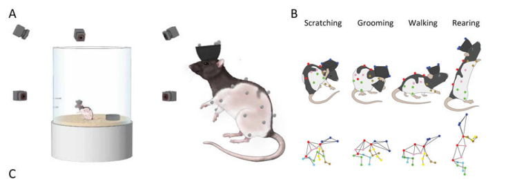
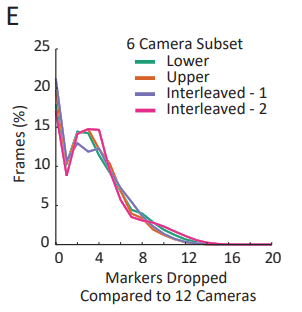

小鼠day1 paper reading
Day 1 paper reading 工作
paper下载以及粗略“扫一眼”
对于大部分的paper来说 很多的标题中都含有Contrastive learning 或者有两篇提到 Representation Learning 先从这两个单词大致了解一下这些paper的相关研究领域以及切入点所在。
Contrastive learning
参考文章：https://zhuanlan.zhihu.com/p/641050181
什么是对比学习？
Metrics learning+self-supervised learning
Metrics learning
主要目标是学习一个合适的度量（或距离度量），以便在数据空间中更好地衡量不同数据点之间的相似性或距离。度量学习的核心思想是通过学习一个度量函数，将相似的样本映射到更接近的点，而将不相似的样本映射到更远的点，从而改进机器学习任务的性能。
总结：本质上就是学习一个距离，从而能够壤样本更好的分类，适合用于聚类、分类、降维等任务。
Self-supervised learning
不依赖于人工标记的标签来进行训练的机器学习方法，在自监督学习中，模型从输入数据中生成自己的标签或者目标，然后使用这些自动生成的标签来进行训练，这种方法通常用于无监督学习任务，其中数据集缺少明确的标签。
其中的核心思想是利用数据中的自然结构或信息来自动生成标签，从而使模型学习有用的特征表示，通常会把输入数据分成两部分：
观察数据这是原始输入数据，作为模型的输入
目标数据从观察数据中生成的“伪标签”或目标，训练目标就是预测目标数据
对比学习是自监督学习中的经典任务：这是一种通过使正样本更接近而将负样本远离来学习表示的方法。常用于图像和文本领域
对比学习在解决什么问题？
- 如何学习representation
- 解决数据稀疏的问题
- 如何更好的利用没有label的数据
- 未打标的数据远远多于打标的数据，不用太浪费了，但是要打标耗时耗力耗钱
- 有监督学习的确定：
- 泛化能力
- Spurious Correlations伪相关
- Adversarial Attacks 对抗攻击
To be continue…
Representation learning
什么是表示？
要搞清楚什么是表示学习，先收获对representation的概念。在《deep learning with python》一书的1.1.3节中是这么定义的，At its core, it’s a different way to look at data—to represent or encode data。字面上理解就是表示或者编码数据的一种形式。举例来说 一张图片可以用RGB表示也可以用HSV表示，这就是对同一数据的两种不同表示，在不同的任务中采取合适的表示会让任务变得简单一些，比如如果要选取图片中的红色像素点，我们就可以采取RGB形式，如果想让图片更加饱和(saturated)，那么采取HSV形式更加简单。又比如说我们要辨别一种鸟类，我们可以使用它的眼睛颜色-羽毛颜色-尾巴形状(这些特征是笔者随便想的，不一定能实际用于分类)作为它的数据，也可以使用脚趾形状-羽毛颜色-尾巴形状作为数据，而眼睛颜色等也是鸟的特征，所以表示学习又叫特征学习(feature learning)。
什么是表示学习
在传统的做法中会通过人为的设计特征或者使用已经完全标记好的数据来试图接近最好的分类效果，但是实际上很多未标记的或者说标记相对较少的训练数据，虽然可以人为标记，但是也可以自动地筛选出比较重要的特征，有点类似于PCA（主成分分析）的思路，这就是表示学习或者说特征学习。
从结构上来说，表示学习更像是一种数据的预处理手段，但是它可以帮助进行无监督或者半监督学习，其中一个典型的方法是自编码器。
Focalized Contrastive View-invariant Learning for Self-supervised Skeleton-based Action Recognition
Abstract
在基于骨架的动作识别中，学习view-invariant representation 是提高特征识别能力的关键，由于隐式的视图依赖表示，现有的方法不能有效地消除视点的影响。所以在这篇paper中提出了一个自监督的框架，称为聚焦对比视角不变学习，可以显著抑制视点粗对齐的表示空间上的特定于视图的信息。通过多视图样本对之间的有效的对比损失来最大化mutual information，FoCoViL这个方法将动作和共同的视图不变属性想联系起来，同时分离不同的属性。同时进一步提出了一种基于成对相似度的自适应聚类方法，来增强对比学习，在学习空间中获得更清晰的聚类边界。与现有的许多严重依赖监督分类器的自监督表示学习工作不同，此方法在无监督和有监督分类器上都表现良好，有较好的识别性能，同时通过大量的实验表明所提出的基于对比的聚焦产生了更具区别性的潜在表征。
什么是“隐式的视图依赖表示”？
这个概念涉及到在不同的视角或者观察角度下，物体或场景的不同表现方式，在3D计算机图形中，通常会存在一个3D模型或场景，以及一系列不同的视图或视角。每个视角都会产生一个不同的二维图像，通常是一个位图或渲染图像。
隐式的视图依赖表示会涉及到以下概念：
- 视角相关性： 不同的视角或视图可能存在相关性，即一个视角生成的信息可以用于改进或者增强从其他视角生成的信息。例如，一个3D模型的某些特征可能在一个视角下更容易识别，而在另一个视角下更难。
- 视角切换： 在渲染3D场景时，相机通常可以自由切换视角，这意味着在不同的视角下同一场景的渲染图像会有所不同隐式的视图依赖表示涉及到如何处理这些不同的视角和它们之间的关系。
- 视角相关特征：在处理视角相关性时，可以提取和利用与视角相关的特征。这些特征可以用于多视图重建、物体识别、视角间的图像匹配等任务
当模型具有视点不变性后，便于在不同的视点下得到正确结果。
Introduction
自监督骨骼人体动作识别(HAR)旨在自动检测一种鲁棒表示来聚类和识别与类别无关的骨骼数据中的动作。与严重依赖动作标签的监督模型相比[1,2,3]，无需人工标记的识别被认为更有效，更全面地学习大规模数据的代表性特征。一些无监督的尝试[4,5,6,7,8]最近取得了与监督模型相当的分类结果，这表明标签信息对于提取有用的表示来区分动作动力学可能不是必需的。在这项工作中，我们考虑了来自多视角特征的自监督动作识别的挑战性领域，其中动作序列是在不同的视角下捕获的。不同的视图外观在特征表示中引入了很大的类内变化，这极大地影响了聚类性能。与受益于动作标签的监督式视图不变学习不同，没有标签指导的学习更具挑战性，通常需要检测视点之间的隐含一致性。
现有的基于骨架的HAR工作从多视图或没见过的视点[9]观测丰富的骨架描述中学习视图不变特征[2,6]。一种简单而有效的预处理方案是将身体关键关节与局部坐标系对齐[10,11]。然而，由于这种视图不变变换对从不同视点捕获的姿态质量很敏感，例如不同程度的自遮挡，因此转换后的多视点动作仍然与许多固有的特定于视图的表示不匹配[12]。随后，深度神经网络被用于自动搜索每个骨架序列的最佳视点[2,13]，这需要强大的监督来指导这种额外的训练。在无监督学习中，[14]引入了对手视图感知分类器来丢弃RGB和深度数据中的视图信息。另一种尝试[6]分别从空间和时间骨架表示中学习视图变特征和视图不变特征，而在多视图动作上的识别性能不太令人满意。迄今为止，在自监督骨架识别中去除视点影响仍然是一个有待解决的问题。
以上部分总结：在HAR任务中，不同视角下的图像在latent space中会有较大的特征差异，对聚类会带来很大的影响，有一些方案可以学习到一些特征（如何局部坐标对齐）但是也会受到自遮挡的影响，亦或者有一些基于DNN的方法会需要强监督来进行guide，总之解决视点影响是一个比较大的问题
在本文中，我们提出了聚焦对比视图不变学习框架FoCoViL，用于视图独立和判别自监督动作识别。FoCoViL由两个互补的部分组成，即对比视图不变学习(CoViL)和聚焦。
这里有一个示意图，意思是FoCoViL的效果和CoViL进行对比，同样的一帧的姿态在不同的视角下会存在不同的自遮挡的等级，因此在CoViL的情况下，这样的两张图片在隐空间中的距离会较远，而在FoCoViL下表现得更好，两者会更加接近，也就是聚类的更好。
首先，CoViL探讨了视点之间的隐含关系。CoViL作为一种改进方案，在面向方向对齐的情况下[11]，通过最大化不同视点下的mutual information对多视点动作进行分组，从而使学习到的表示对视点变化具有鲁棒性。具体而言，在自监督自编码器backbone下，我们提出在相同场景下不同视点下动作的一致性最大化(positive pairs“+”)，这有助于提取它们之间的共同特征，这些特征是视图不变的。同时，我们提出扩大不同场景下动作的不一致度(negative pairs“−”)，这有利于稀疏潜在空间的聚类。(对比学习中正样本负样本的概念。)这两个目标是通过一种紧密形式的对比损失来共同实现的[15]，因为它具有在自监督表示中发现和比较相似性和不相似性的优越能力。使用CoViL，我们构建了一个潜在空间，与低级视点对齐生成的潜在空间相比，它对视图动态的鲁棒性更强[5]。
其次，我们提出通过在CoViL中围绕对比学习包装一种新的聚焦方法来增强潜在空间。这是为了解决现有许多自监督系统固有的训练数据不平衡问题————在误分类占主导地位的困难样本没有被充分研究，从而导致潜在空间中的样本分布不明确。为了缓解对比学习中的不平衡问题，一些与我们高度相关的工作主要集中在挖掘困难负样本上，例如合成新样本[16,17]或使用类标签作为先验[18]。相比之下，我们的方法考虑在学习到的代表相似度下自适应地“聚焦”困难正样本和负样本。利用CoViL中有效的两两相似度估计来动态识别和重新平衡简单和困难的多视图动作对。这是通过将困难对定义为投影潜在空间中的稀疏正对(距离较远的相同场景)或密集负对(距离较近的不同场景)来实现的，而简单的对则相反。所提出的聚焦减少了提供有限信息的简单对的权重，同时专注于将困难负对推开并拉近困难正对，从而在潜在空间中强制执行更明确的决策边界。
主要贡献可归纳为三个方面：
- 提出了一个自监督框架来逐步学习一个判别骨架的动作表示，该框架对监督和无监督评估协议都具有鲁棒性
- 我们提出了对比视图不变学习，通过适应对比学习，最大化多视图动作对之间的相互信息，旨在提炼具有高级视图不变特征的潜在表征。
- 作为将聚焦应用于对比学习的新尝试，我们已经证明了它在动作识别任务中学习更稳健和无偏表示的可行性。
Method
暂时先放一下 可能明天补充 先看新发的文章
Continuous whole-body 3D kinematic recordings across the rodent behavioral repertoire
Abstract
在哺乳动物模型中，高分辨率的运动学跟踪仅限于受约束的环境中的短暂片段，限制了我们探测自然行为及其神经基础的能力。为了解决这个问题，我们开发了CAPTURE，这是一种结合了动作捕捉和深度学习的行为监测系统，可以在自由行为的动物身上连续week-long timescales跟踪大鼠头部、躯干和四肢的3D运动学。与现有的卷积网络行为跟踪方法相比，CAPTURE在精度和鲁棒性方面实现了10-100倍的提高。我们展示了CAPTURE能够全面描述自然啮齿动物行为的运动学和顺序组织（顺序结构），个体间的变化以及药物和疾病的扰动，包括在脆性X染色体综合征的大鼠模型中识别持续的梳理状态（什么是梳理状态？理毛吗）。CAPTURE极大地扩展了可以定量研究的行为和环境的范围，为对自然行为及其神经基础的新理解打开了大门。
总结： 这里提到这个系统可以检测头部、躯干和四肢等部位，能够描述运动学和顺序结构（这个sequential organization还需要去理解）包括对某一种疾病可以有一些说明，可以在后面看一下详细说明。
Introduction
神经科学和心理学的首要目标是描述自然行为背后的神经原理和机制。实现这一目标的关键第一步是开发能够精确测量和描述实验对象行为的工具和分析框架(Anderson和Perona, 2014;Egnor and Branson, 2016;Krakauer et al, 2017)。在人类和哺乳动物模型中，在明确描绘的环境中，在简短的记录过程中，在量化运动和行为方面取得了进展(Machado等人，2015;Mathis等人，2018;Pereira et al, 2019)。然而，在自然环境和更长时间尺度下精确测量行为的方法一直缺乏，只能粗略估计动物的姿势、运动和行为状态(Hong等人，2015;Wiltschko et al, 2015)。这种技术限制阻碍了对自然主义行为的组织及其神经基础的定量研究。
例如，虽然运动和它们产生的行为被认为是在组织规则下运作的，就像控制语言的语音和句法规则一样，但只有少数这样的规则被描述过。与大多数涉及基因、细胞和物种的生物学研究相反，没有正式的分类结构来解析和命名实验动物的行为，更不用说它们的行为序列或状态组合了。用实验中可重复的变量来精确描述自然行为，比如身体部分运动学，可以为复杂行为创造严格且被普遍接受的定义。在时间尺度上扩展这些测量可能会导致建立真正的行为通用语。这种行为的标准和定量度量可以极大地促进对细胞，分子和电路水平病理的行为影响的调查。更一般地说，它们可以作为各种疾病模型的生物标志物，目前由于缺乏跨实验室的行为可重复性，这些模型的效用受到限制(Brunner等人，2015;Silverman et al, 2010)。
同样，有人假设，控制运动的神经系统反映了动物行为的层次结构，不同的大脑区域或脊髓回路控制着单个肢体的运动，个体行为的产生，以及更长的时间尺度行为程序的选择(Gallistel, 1982;Merel et al .， 2019a)。然而，尽管基于任务的研究已经详细描述了个体运动是如何产生的(Dhawale等人，2019;Svoboda和Li, 2018)，更复杂的全身行为是如何被控制和产生的，人们仍然知之甚少。类似于自然视觉刺激对于阐明视觉系统的功能和组织是必不可少的(Simoncelli和Olshausen, 2001)，测量自然行为的有效工具应该能够使人们对运动系统存储和产生行为的原则有新的理解(Merel等人，2019b)。
描述自然行为、其神经基础以及环境和神经扰动的影响的理想工具必须提供精确和连续的跨动物自然行为库的运动运动学多尺度测量。在哺乳动物中，要实现这一目标，需要在不同的姿势和位置，以高时空分辨率和3D方式跟踪四肢、躯干和头部上的点的位置。在啮齿类动物中，这需要以毫米级精度和毫秒级分辨率进行运动学跟踪，理想情况下，连续数小时或数天取样啮齿类动物的全部行为并捕获其长时间尺度结构(Anderson和Perona, 2014;Egnor and Branson, 2016)。虽然基于头顶视频的记录或深度成像可以在基本上没有特征的环境中估计动物的姿势，但这些方法无法可靠地跟踪附属物(Hong等人，2015;Jhuang等，2010;Wiltschko et al, 2015)。来自计算机视觉和机器学习的关键点跟踪工具可以监测动物身体上的可见地标(布兰森等人，2009;Machado等，2015;Mathis等人，2018;Pereira等人，2019)，但到目前为止，由于无法强大地跟踪被遮挡的landmarks或跨越广泛的动物姿势，因此受到限制。
在这里，我们提出了一种技术能够记录3D运动的运动学跨越大鼠的行为集合。通过结合动作捕捉、深度学习和身体穿刺，我们实现了对大鼠头部、躯干和肢体的连续长期运动学跟踪，与卷积网络相比，具有更高的精度和鲁棒性。我们使用这些连续的运动记录来收集确定的大鼠行为参考数据集，记录下老鼠一周内的每一个动作。为了解析这些记录，我们开发了一个机器学习分析框架，使我们能够识别刻板的生物体行为、行为序列和行为状态。这个框架使我们能够描述自然行为的组织原则，以及在脆性X综合征大鼠模型中由兴奋剂引入的综合表型行为扰动。
总结： 在Introduction中主要提及了一些现有的问题：
- 首先是在自然环境中以及长时间的条件下没有精度较高的测量方法，只能粗略的去估计动物的姿势、运动和行为状态。
- 其次是动物的运动和行为都被认为是在组织规则下运作的，但是只有少数这样的规则被描述过（有一些类似于组会上举例说的拿咖啡这样的动作时认为赋予的定义一样，能够被定义的一些动物的行为和运动不多）。没有正式的分类结构来解析和命名动物的行为，更不用行为序列以及状态组合。
- 通过一些在实验中可以重复出现的变量来描述自然行为，可以创建严格且被普遍接受的定义。而目前的一些实验会缺乏跨实验室的行为可重复性，因此一些模型的效果还受到限制。
- 对于以上问题有个假设表示动物行为的层次结构是由控制运动的神经系统决定的，不同的大脑区域以及脊髓回路控制单个肢体的运动、个体行为的产生以及长时间尺度下的行为选择。但是对于更为复杂的全身运动，人类的理解也很少（我觉得这个目前应该也没有很好的解决方案）
- 目前为止的技术没法跟踪被遮挡的landmarks和跨越大范围的动物姿势。
- 贡献：
- 提供一个3D rat behavior dataset，结合动作捕捉、深度学习和身体穿刺，实现了对老鼠头部、躯干和四肢的长期跟踪，相比卷积网络具有更高的精度和鲁棒性。
- 开发了一个机器学习的分析框架，可以识别到刻板的生物体行为、行为序列和行为状态，从而可以去描述自然行为的组织原则（类似于制定一个可以说明运动规律的语法），并且可以表示在脆性X染色体综合征以及兴奋剂状态下的扰动。
实验设置
我们开发了一种方法，通过身体穿孔长期将反射标记附着在动物身上，这种身体修饰方法也在人类身上得到了很好的应用(Horst等人，1992;Stirn, 2003)(方法S1)。我们的反光标记由半镀银高折射率球透镜(n=2.0)组成，可作为明亮耐用的动作捕捉标记(Mischiati等人，2015)。我们使用高强度环氧树脂将这些反射器融合到生物相容性透皮人体穿孔中。绝大多数穿孔在整个实验过程中都保持稳定附着(图S1C)。注：看图的意思大概是这些标记物大部分时间都没有脱落。
为了追踪大鼠的反射光穿孔，我们建造了一个啮齿动物动作捕捉工作室，由放置在直径两英尺的有机玻璃舞台周围的动作捕捉摄像机组成(图S1A)。因为标记必须被至少两台相机看到才能被三角化成3D，我们使用了12台相机来提供对遮挡的鲁棒性。为了鼓励行为多样性，我们为其配备了床上用品和物体以及用于操作训练的杠杆(Kawai等，2015)(图1A-B)(视频S1和S2)。

注：图S1A是小鼠拍摄数据集的环境，1A-B大概是个拍摄的状态 ，视频大致就是在表达拍摄过程中小鼠是怎么佩戴这个半镀银高折射率球透镜，以及得到的keypoints效果。
我们首先评估了CAPTURE在啮齿类动物行为表中记录单个肢体运动的能力。我们让我们的大鼠(n=5)习惯了竞技场，并给它们配备了相同的20个标记，这些标记一旦被追踪，就可以用来计算动物的头部、躯干、前肢和后肢的位置和方向(图S1B)。我们以300赫兹的频率连续一周跟踪每只大鼠的标记位置。与深度成像方法不同(Mallick et al, 2014)，床上用品或物体的使用不会干扰我们的动作捕捉记录，实验的arena大概是动物的家笼两倍大小(图1C-D)(视频S3)。我们发现我们的记录具有亚毫米级的跟踪精度（0.21±0.07 mm）;标记之间的片段长度在记录过程中保持稳定(图S1D)，表明CAPTURE可以在一周的时间跨度内可靠地报告肢体运动学。当使用较少的摄像机时，跟踪性能会略有下降(图S1E)，但减少摄像机数量的动机很少,因为和传统的video 相机系统不一样，添加更多的motion capture相机不会带来多大的实验和计算负担。

注： S1B是表示标记物放置的地方 但我感觉有一些不准 后面的D和E主要表示数据可用， D的标准差表示在各个情况的记录中基本稳定，E表示当相机减少时性能会下降，但一般不需要减少相机。
为了测试身体穿孔是否会改变动物的行为，我们给n=3只大鼠戴上装有反光镜的头帽，并在穿孔前追踪两天(图S2)。有和没有穿洞的动物在竞技场上移动的时间相等，头部速度的分布和协方差也相似(图S2A-C)。一个经过训练的分类器，通过追踪帽子的运动来识别动物的行为，预测了标记附着前后的等效行为使用(图S2D-F)，总的来说，这表明穿孔不会导致我们的动物发生重大的行为变化。
与所有基于视觉的跟踪方法一样，未处理的动作捕捉记录容易因为自身或环境遮挡而导致前肢和后肢标记丢失。这些缺失绝大多数是短暂的(持续时间约为20 ms)，允许我们使用基于标记位置的时序历史的标准插值方法来可信地重建丢失标记的位置(Liu和McMillan, 2006)(图S3)。然而，由于这些方法没有纳入来自邻近标记的约束或模型长时间尺度对标记位置的影响，因此它们在较长时间的dropout情况下表现不佳。为了解决这个问题，我们使用了大量跟踪良好的动作捕捉数据(每天约2500万帧)来训练更具表现力的深度学习架构。特别是，我们训练了一个时间卷积网络(方法S2)(Oord等人，2016a)，使用关于其过去位置的时间信息以及关于所有其他标记位置的空间信息来预测给定标记的位置(图S3)。我们的估算程序在人工dropout（手动控制其中的数据丢失？）期间的估计中值误差低，约为1毫米。在植入markers之后，当动物处于活动状态时，所有20个标记在99%的帧内被很好地跟踪，导致标记之间的位置误差在亚毫米(图S1F-S1H)。
注：这里大概就是一些对照组，表示加了markers前后对小鼠本身的行为影响不大，表示数据是可信的，同时为了重建一些会因为自遮挡或者环境遮挡丢失的标记数据，这边也使用了大量mocap数据来训练一个深度学习架构（TCN）来预测marker的位置。今天看到这就歇逼了，明天从Comparison with keypoint detection using convolutional networks 开始读。
1 on 1 chat with wyj
主要明确了一下一些需求，已知深圳的那个项目是本身在卖一个系统，大致是底下一块显示器，把小鼠放在上面可以出一个类似OpenPose的效果，但是不准，需要找他们公司做finetune(收费)，从而可以提供一些行为分析的聚类，大致显示的效果是:对一只小鼠来说，哪一些行为会比较多，哪一些行为会比较少，仅此而已。首先任务的第一步就是想做到他们声称的效果，即能够做一个较好的聚类，因此现在第一步是那边在采集一些3D的数据，以及在整合处理一些已有的数据集（Rat 7M）中有一些把老鼠毛剃了穿mocap设备采集的数据，这个数据的特点是比较准，但是会不全不连续。
数据集的存在类似一个三角形（准确，连续，还有一个可能是种类多，但是忘了）最后的数据也很难实现三个属性都能兼顾，只能尽可能从有限的数据集中找到更好的算法，目前的猜测是不连续的数据集对于聚类的效果也许会有较大的负面影响。
另外wyj的意思是xuten那边会有一些raw dataset 后面可以问他们要，以及可以把深圳那边的代码跑一下看看效果，这边就需要配置一下MATLAB的环境，准备放在明天或者后续的工作中。
一些读paper的建议：基本上先过introduction和Method 看看有没有和我们工作比较相关的或者有用的，如果相关性较高可以看一下related works有没有一些前置的工作可供学习。